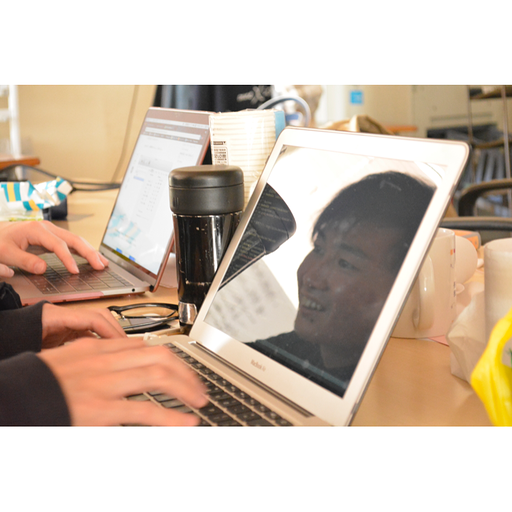

Associate professor 野中 尋史 情報・経営システム工学専攻 准教授 Doctor Alemán Carreón Elisa Claire 情報・経営システム工学専攻２年 Master 中井 堅誠 情報・経営システム工学専攻２年 邊土名 朝飛 情報・経営システム工学専攻１年 山城 広周 情報・経営システム工学専攻１年 波多野 泰良 情報・経営システム工学専攻１年 Hugo Alberto Mendoza España 情報・経営システム工学専攻１年 稲垣 徹郎 情報・経営システム工学専攻１年 Bachelor 片岡 翔太郎 情報・経営システム工学課程４年 作本 猛 情報・経営システム工学課程４年 重久 直輝 情報・経営システム工学課程４年 井若 玄貴 情報・経営システム工学課程４年 大場 雅士 情報・経営システム工学課程3年 御堂 凱斗 情報・経営システム工学課程3年 山本 雄太 情報・経営システム工学課程3年 Gonzalez Flores Robert 情報・経営システム工学課程3年